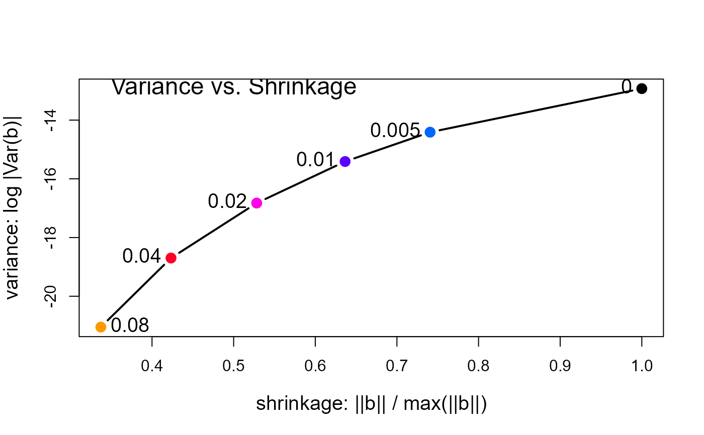
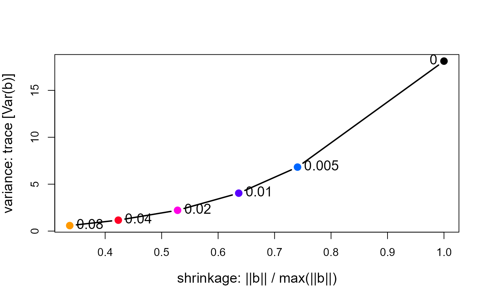

The goal of precision is to allow you to study the relationship between shrinkage of ridge
regression coefficients and their precision directly by calculating measures of each.
Three measures of (inverse) precision based on the “size” of the covariance matrix of the parameters are calculated. Let \(V_k \equiv \text{Var}(\mathbf{\beta}_k)\) be the covariance matrix for a given ridge constant, and let \(\lambda_i , i= 1, \dots p\) be its eigenvalues. Then the variance (= 1/precision) measures are:
"det": \(\log | V_k | = \log \prod \lambda\) (withdet.fun = "log", the default) or \(|V_k|^{1/p} =(\prod \lambda)^{1/p}\) (withdet.fun = "root") measures the linearized volume of the covariance ellipsoid and corresponds conceptually to Wilks' Lambda criterion"trace": \( \text{trace}( V_k ) = \sum \lambda\) corresponds conceptually to Pillai's trace criterion"max.eig": \( \lambda_1 = \max (\lambda)\) corresponds to Roy's largest root criterion.
Two measures of shrinkage are also calculated:
norm.beta: the root mean square of the coefficient vector \(\lVert\mathbf{\beta}_k \rVert\), normalized to a maximum of 1.0 ifnormalize == TRUE(the default).norm.diff: the root mean square of the difference from the OLS estimate \(\lVert \mathbf{\beta}_{\text{OLS}} - \mathbf{\beta}_k \rVert\). This measure is inversely related tonorm.beta
A plot method, plot.precision facilitates making graphs of these quantities.
Value
An object of class c("precision", "data.frame") with the following columns:
- lambda
The ridge constant
- df
The equivalent effective degrees of freedom
- det
The
det.funfunction of the determinant of the covariance matrix- trace
The trace of the covariance matrix
- max.eig
Maximum eigen value of the covariance matrix
- norm.beta
The root mean square of the estimated coefficients, possibly normalized
- norm.diff
The root mean square of the difference between the OLS solution (
lambda = 0) and ridge solutions
Note
Models fit by lm and ridge use a different scaling for
the predictors, so the results of precision for an lm model
will not correspond to those for ridge with ridge constant = 0.
Examples
longley.y <- longley[, "Employed"]
longley.X <- data.matrix(longley[, c(2:6,1)])
lambda <- c(0, 0.005, 0.01, 0.02, 0.04, 0.08)
lridge <- ridge(longley.y, longley.X, lambda=lambda)
# same, using formula interface
lridge <- ridge(Employed ~ GNP + Unemployed + Armed.Forces + Population + Year + GNP.deflator,
data=longley, lambda=lambda)
clr <- c("black", rainbow(length(lambda)-1, start=.6, end=.1))
coef(lridge)
#> GNP Unemployed Armed.Forces Population Year GNP.deflator
#> 0.000 -3.4471925 -1.827886 -0.6962102 -0.34419721 8.431972 0.15737965
#> 0.005 -1.0424783 -1.491395 -0.6234680 -0.93558040 6.566532 -0.04175039
#> 0.010 -0.1797967 -1.361047 -0.5881396 -1.00316772 5.656287 -0.02612152
#> 0.020 0.4994945 -1.245137 -0.5476331 -0.86755299 4.626116 0.09766305
#> 0.040 0.9059471 -1.155229 -0.5039108 -0.52347060 3.576502 0.32123994
#> 0.080 1.0907048 -1.086421 -0.4582525 -0.08596324 2.641649 0.57025165
(pdat <- precision(lridge))
#> lambda df det trace max.eig norm.beta norm.diff
#> 0.000 0.000 6.000000 -12.92710 18.1189511 15.4191000 1.0000000 0.000000
#> 0.005 0.005 5.415118 -14.41144 6.8209398 4.6064698 0.7406376 1.276089
#> 0.010 0.010 5.135429 -15.41069 4.0422816 2.1806533 0.6365441 1.783154
#> 0.020 0.020 4.818103 -16.82581 2.2180382 1.0254551 0.5282452 2.262006
#> 0.040 0.040 4.477853 -18.69819 1.1647170 0.5807883 0.4232699 2.679361
#> 0.080 0.080 4.127782 -21.05065 0.5873002 0.2599108 0.3372722 3.026656
# plot log |Var(b)| vs. length(beta)
with(pdat, {
plot(norm.beta, det, type="b",
cex.lab=1.25, pch=16, cex=1.5, col=clr, lwd=2,
xlab='shrinkage: ||b|| / max(||b||)',
ylab='variance: log |Var(b)|')
text(norm.beta, det, lambda, cex=1.25, pos=c(rep(2,length(lambda)-1),4))
text(min(norm.beta), max(det), "Variance vs. Shrinkage", cex=1.5, pos=4)
})

# plot trace[Var(b)] vs. length(beta)
with(pdat, {
plot(norm.beta, trace, type="b",
cex.lab=1.25, pch=16, cex=1.5, col=clr, lwd=2,
xlab='shrinkage: ||b|| / max(||b||)',
ylab='variance: trace [Var(b)]')
text(norm.beta, trace, lambda, cex=1.25, pos=c(2, rep(4,length(lambda)-1)))
# text(min(norm.beta), max(det), "Variance vs. Shrinkage", cex=1.5, pos=4)
})
